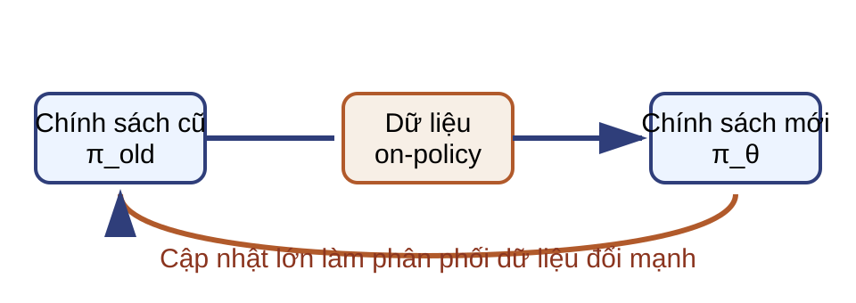
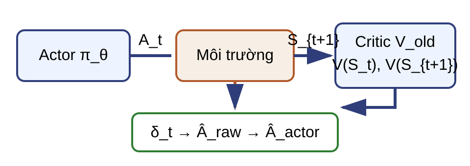
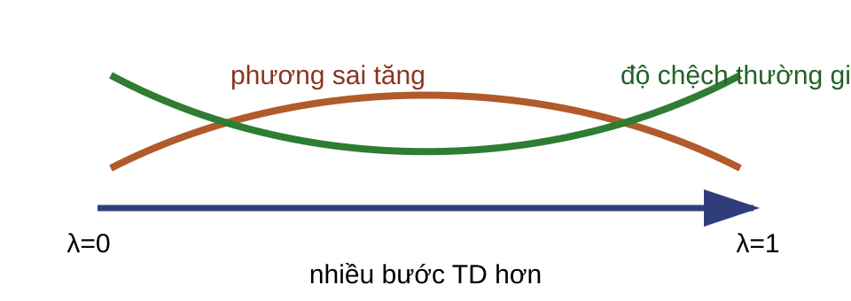
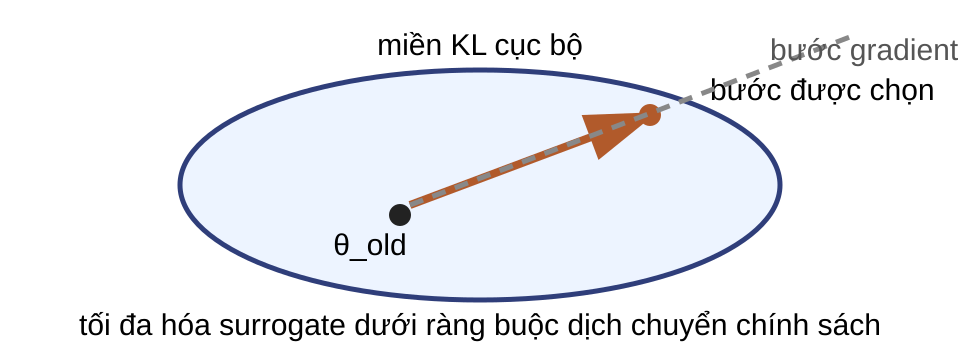
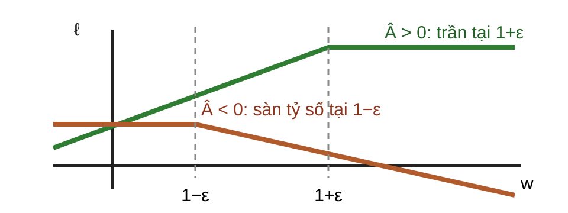
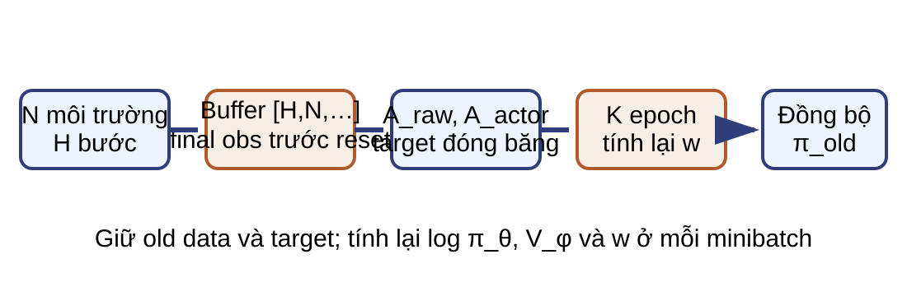
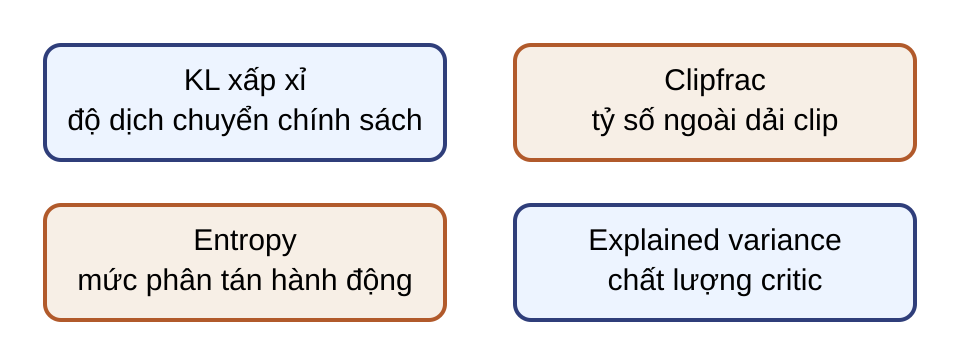

Tối ưu chính sách theo miền tin cậy (TRPO) Tối ưu chính sách gần (PPO) và ước lượng lợi thế Bài 10 · Học tăng cường · Học kỳ 1, 2026–2027
Bài học nối từ REINFORCE sang ba quyết định kỹ thuật: giảm phương sai bằng critic, giới hạn độ dịch chuyển chính sách và tái sử dụng một batch theo chính sách có kiểm soát. Trọng tâm là hợp đồng toán học và đường dữ liệu của TRPO, PPO.Nguồn: lecture10_policy_gradient_part2.pdf, tr. 1–43.
Kết quả học tập Lợi thế Phân biệt baseline Monte Carlo, actor–critic và ước lượng lợi thế tổng quát (GAE).
Miền tin cậy Giải thích surrogate, phân kỳ Kullback–Leibler (KL) và natural gradient.
PPO-Clip Tính mục tiêu theo đúng dấu của lợi thế và tỷ số.
Triển khai Kiểm tra batch, đại lượng đóng băng, loss và chẩn đoán.
Dữ liệu đổi sau mỗi lần cập nhật 
Một bước lớn có thể làm return tăng nhanh, nhưng cũng làm dữ liệu vừa thu kém đại diện cho chính sách mới.
Đây là vấn đề chung của tối ưu chính sách trực tiếp. Gradient được ước lượng từ dữ liệu do chính sách cũ sinh ra; sau cập nhật, phân bố hành động và trạng thái đều có thể đổi. TRPO kiểm soát dịch chuyển bằng KL, còn PPO sửa mục tiêu và theo dõi chẩn đoán.Nguồn: tr. 4, 14.
Quy ước của bài $S_0\sim\rho_0$, $A_t\sim\pi_\theta(\cdot\mid S_t)$ và $R_{t+1}$ nhận sau $A_t$:
$$G_t=\sum_{k=t}^{T-1}\gamma^{k-t}R_{k+1},\qquad J(\theta)=\mathbb E[G_0],\quad 0\le\gamma<1.$$
$V^\pi(s)=\mathbb E[G_t\mid S_t=s]$, $Q^\pi(s,a)=\mathbb E[G_t\mid S_t=s,A_t=a]$ và $A^\pi=Q^\pi-V^\pi$.
REINFORCE dùng return toàn phần $$\widehat g_{\mathrm{MC}}=\sum_{t=0}^{T-1}\gamma^tG_t\,\left.\nabla_\theta\log\pi_\theta(A_t\mid S_t)\right|_{\theta=\theta_{\mathrm{old}}}.$$
Thu cả episode dưới $\pi_{\theta_{\mathrm{old}}}$. Lấy đạo hàm theo $\theta$, rồi đánh giá tại $\theta_{\mathrm{old}}$. Return Monte Carlo không bootstrap nhưng có phương sai cao.
Baseline loại phần chung của return Một return lớn có thể do trạng thái thuận lợi, không chỉ do hành động vừa chọn.
$$\widehat g_b=\sum_t\gamma^t\bigl(G_t-b(S_t)\bigr)\left.\nabla_\theta\log\pi_\theta(A_t\mid S_t)\right|_{\theta=\theta_{\mathrm{old}}}.$$
Dự đoán: baseline theo trạng thái loại phần chung mà không đổi kỳ vọng gradient.
Baseline không đổi kỳ vọng hàm điểm Với $A\sim\operatorname{Bernoulli}(p)$, $p=0{,}25$, $b(s)=4$ và hàm điểm theo logit là $A-p$:
$$\mathbb E_A[4(A-p)]=4\,[0{,}25(0{,}75)+0{,}75(-0{,}25)]=0.$$
Với hành động rời rạc và $b(s)$ không phụ thuộc $a$:
$$\sum_a\pi_\theta(a\mid s)b(s)\nabla_\theta\log\pi_\theta(a\mid s)=b(s)\nabla_\theta\sum_a\pi_\theta(a\mid s)=0.$$
$\operatorname{sg}(x)=x$ ở lượt thuận và $\nabla\operatorname{sg}(x)=0$.
Actor–critic có thể dùng đích Monte Carlo hoặc bootstrap Actor–critic Monte Carlo Sai phân thời gian (TD) / GAE critic học từ đích $G_t$ đích có $V(S_{t+1})$ tín hiệu actor $G_t-V_\phi(S_t)$ $\widehat A_t$ từ TD hoặc GAE đánh đổi phương sai thường cao hơn phụ thuộc bootstrap và critic
Quy ước của bài: từ đây “nhánh bootstrap” chỉ actor–critic dùng TD hoặc GAE; đây không phải định nghĩa phổ quát của actor–critic.
Critic tạo sai số sai phân thời gian 
$$\delta_t=R_{t+1}+\gamma m_tV_{\mathrm{old}}(S_{t+1})-V_{\mathrm{old}}(S_t).$$
$m_t=0$ khi MDP kết thúc thật; ngược lại $m_t=1$.
GAE trộn nhiều tầm bootstrap 
$$\widehat A_t^{\mathrm{raw}}=\delta_t+(\gamma\lambda)\delta_{t+1}+(\gamma\lambda)^2\delta_{t+2}+\cdots.$$
$\lambda=0$ dùng một sai số TD; $\lambda$ gần $1$ truyền tín hiệu qua nhiều bước hơn.
Hai mặt nạ có hai nhiệm vụ $$\delta_t=R_{t+1}+\gamma m_tV_{\mathrm{old}}(S_{t+1})-V_{\mathrm{old}}(S_t),$$ $$\widehat A_t^{\mathrm{raw}}=\delta_t+\gamma\lambda c_t\widehat A_{t+1}^{\mathrm{raw}}.$$
ranh giới $m_t$ bootstrap $c_t$ tiếp diễn GAE kết thúc MDP thật tại $T$ 0 0 truncation ngoại sinh hoặc cuối rollout $H$ có quan sát cuối 1 0 chuyển tiếp thường 1 1
Chỉ đặt m bằng một khi truncation là giới hạn nhân tạo hoặc ngoại sinh và có quan sát cuối hợp lệ để bootstrap. Nếu giới hạn thời gian là một phần của MDP, chẳng hạn thời gian còn lại nằm trong trạng thái, thì hết chân trời là terminal của bài toán và m bằng không. c luôn dừng đệ quy tại reset hoặc cuối rollout. Trên rollout hữu hạn, viết chuỗi thành đệ quy có mặt nạ: mỗi bước chỉ dùng $\delta_t$ và $\widehat A_{t+1}^{\mathrm{raw}}$ với hệ số $\gamma\lambda c_t$.Nguồn: tr. 13, 24–25; bổ sung hợp đồng buffer.
Ví dụ GAE phân biệt kết thúc và truncation Cho $\gamma=0{,}9$, $\lambda=0{,}8$, $V(S_0)=2$, $V(S_1)=3$, $R_1=1$, $R_2=2$.
Episode kết thúc tại $T=2$ $\delta_0=1{,}7$, $\delta_1=-1$.
$\widehat A_0^{\mathrm{raw}}=0{,}98$
Rollout ngoại sinh dừng tại $H=2<T$ $V(S_2)=4$, $\delta_1=2{,}6$.
$\widehat A_0^{\mathrm{raw}}=3{,}572$
Bài tập: baseline và GAE Kiểm lại $\mathbb E[4(A-0{,}25)]=0$ khi $A\sim\operatorname{Bernoulli}(0{,}25)$. Tính $\widehat A_0^{\mathrm{raw}}$ cho terminal và truncation ngoại sinh trong ví dụ GAE. Nêu $(m_t,c_t)$ cho terminal, truncation ngoại sinh có quan sát cuối và chân trời thuộc MDP. Kỳ vọng bằng $0$; hai lợi thế thô là $0{,}98$ và $3{,}572$; terminal và chân trời MDP dùng $(0,0)$, truncation ngoại sinh dùng $(1,0)$.
Gradient lớn có thể phá chính sách Surrogate khớp bậc nhất với $J$ tại $\theta_{\mathrm{old}}$ chỉ đáng tin trong lân cận của chính sách đã sinh dữ liệu.
Bước quá nhỏ Dữ liệu còn đại diện nhưng cải thiện chậm.
Bước quá lớn Xác suất hành động và phân bố trạng thái đổi mạnh.
TRPO cần chọn một bước vừa cải thiện surrogate, vừa giữ chính sách mới gần chính sách cũ.
Trang này chỉ đặt vấn đề. Chưa dùng đẳng thức sai khác hiệu năng hay ràng buộc KL. Không nói KL nhỏ tự động bảo đảm hiệu năng thực tế; bảo đảm trong phân tích gốc cần thêm giả thiết và chặn sai số.Nguồn: tr. 14, 16.
Miền tin cậy giới hạn nơi xấp xỉ có ích 
Trong ellipsoid KL cục bộ, hướng cải thiện surrogate được tin cậy hơn; ngoài miền này, xấp xỉ tuyến tính có thể chỉ sai hướng.
Hình cung cấp trực giác trước công thức: gradient chọn hướng, còn hình học Fisher đo độ dịch chuyển của phân phối chính sách. Bán kính delta quyết định miền được xét, không phải một mức tăng hiệu năng được bảo đảm vô điều kiện.Nguồn: tr. 14, 16–17; vẽ lại hình trust-region.
Dữ liệu cũ vẫn cho biết hướng thay đổi Hai mẫu được thu dưới $\pi_{\mathrm{old}}$:
Hành động có lợi $\widehat A^{\mathrm{raw}}=2$, xác suất đổi từ $0{,}20$ thành $0{,}24$.
$w=0{,}24/0{,}20=1{,}2$
Đóng góp surrogate: $2{,}4$.
Hành động bất lợi $\widehat A^{\mathrm{raw}}=-1$, xác suất đổi từ $0{,}50$ thành $0{,}40$.
$w=0{,}40/0{,}50=0{,}8$
Đóng góp surrogate: $-0{,}8$.
Đẳng thức, xấp xỉ rồi ràng buộc thực nghiệm $$d^\pi(s)=(1-\gamma)\sum_{t\ge0}\gamma^t\Pr_\pi(S_t=s),\qquad \mathbb E_{\mathrm{disc},\pi}[f]=\mathbb E_{S\sim d^\pi,A\sim\pi}[f],$$ $$J(\pi')-J(\pi)=\frac{\mathbb E_{\mathrm{disc},\pi'}[A^\pi]}{1-\gamma}\ \approx\ \frac{\mathbb E_{\mathrm{disc},\pi}[wA^\pi]}{1-\gamma}.$$
Với batch $B=HN$, đặt $\mathbb E_B[f]=B^{-1}\sum_{i=1}^Bf_i$; TRPO thực hành giải gần đúng
$$\max_\theta\mathbb E_B[w_t\widehat A_t^{\mathrm{raw}}]\quad\mathrm{s.t.}\quad\mathbb E_B[D_{\mathrm{KL}}(\pi_{\mathrm{old}}\|\pi_\theta)]\le\delta.$$
Đẳng thức đầu cần hai chính sách có cùng phân bố đầu rho không, gamma nhỏ hơn một, và có thể nối episode bằng trạng thái hấp thụ phần thưởng không. Bước thứ hai thay occupancy mới bằng occupancy cũ nên là xấp xỉ. Bước cuối dùng trung bình đều trên batch, nên KL trong ràng buộc là KL trung bình thực nghiệm, không phải max-KL lý thuyết trong chặn của TRPO gốc; cũng không đồng nhất với kỳ vọng occupancy chiết khấu của mục tiêu $J=\mathbb E[G_0]$. Không đồng nhất ba dòng này hoặc đồng nhất average-KL với max-KL trong chặn lý thuyết của TRPO gốc.Nguồn: Schulman et al. (2015), Trust Region Policy Optimization , Eq. 1–7; nguồn bài, tr. 15–16.
Fisher cục bộ và ước lượng từ batch Đặt $u(s,a)=\left.\nabla_\theta\log\pi_\theta(a\mid s)\right|_{\theta_{\mathrm{old}}}$:
$$F=\left.\nabla_\theta^2\mathbb E_{S\sim B}\!\left[D_{\mathrm{KL}}(\pi_{\mathrm{old}}(\cdot\mid S)\|\pi_\theta(\cdot\mid S))\right]\right|_{\theta_{\mathrm{old}}}=\mathbb E_{S\sim B,A\sim\pi_{\mathrm{old}}}[uu^\top],$$ $$\widehat F=\frac1B\sum_{t=1}^B u_tu_t^\top\ \approx\ F.$$
$F$ là Fisher cục bộ trên phân bố trạng thái của batch; $\widehat F$ là ước lượng Monte Carlo thay kỳ vọng hành động bằng mẫu đã lấy mẫu.
Ví dụ bước natural gradient Cho $F=\operatorname{diag}(4,1)$, $g=(2,1)$, $\delta=0{,}01$ và $\eta=0$; ở đây $F$ xác định dương.
$$F^{-1}g=(0{,}5,1),\quad g^\top F^{-1}g=2,$$ $$\Delta^*=\sqrt{\frac{0{,}02}{2}}(0{,}5,1)=(0{,}05,0{,}1).$$
Kiểm tra: $\tfrac12(\Delta^*)^\top F\Delta^*=0{,}01$.
TRPO giải hệ rồi tìm đường Thu quỹ đạo bằng $\pi_{\mathrm{old}}$ và tính lợi thế. Dùng tích Fisher–véc-tơ (FVP) trong gradient liên hợp (CG) để giải gần đúng $(\widehat F+\eta I)x=g$. Chọn $\eta>0$ để hệ thường xác định dương; nếu $\eta=0$, phải giả sử $\widehat F$ xác định dương. Dừng CG theo chuẩn residual hoặc số vòng tối đa; co $x$ theo biên KL. Line search kiểm surrogate và KL thực nghiệm; nhận bước hoặc giữ chính sách cũ. TRPO chỉ nhận bước qua đủ hai kiểm tra ứng viên surrogate empirical KL quyết định $\Delta_1$ tăng $0{,}008\le0{,}01$ có thể nhận $\Delta_2$ giảm $0{,}006\le0{,}01$ từ chối $\Delta_3$ tăng $0{,}014>0{,}01$ từ chối
Câu hỏi: ma trận Fisher có cần được dựng và nghịch đảo tường minh không?
Bài tập: bước TRPO cục bộ Tính $F^{-1}g$ và $g^\top F^{-1}g$ cho ví dụ hai chiều. Tính $\Delta^*$ khi $\delta=0{,}01$. Kiểm ràng buộc bậc hai và giải thích tác dụng của $F$. $F^{-1}g=(0{,}5,1)$; tích bằng $2$; $\Delta^*=(0{,}05,0{,}1)$; dạng toàn phương bằng $0{,}01$.
PPO cần bước gần nhưng chỉ dùng tối ưu bậc nhất TRPO kiểm KL bằng phép giải Fisher và line search. PPO giữ batch cũ, tỷ số và lợi thế, rồi sửa mục tiêu để hạn chế lợi ích của thay đổi thuận lợi quá lớn.
Giữ lại Batch on-policy, $w_t$, lợi thế và ý tưởng cập nhật gần.
Bỏ khỏi vòng bắt buộc Giải hệ Fisher và backtracking line search.
Đây là vấn đề mở đầu chu trình PPO. PPO không tương đương đại số với TRPO; nó dùng một mục tiêu khác để huấn luyện bằng SGD hoặc Adam.Nguồn: tr. 19–21.
Tỷ số tại hành động đã lấy mẫu 
$$w_t(\theta)=\exp\!\bigl(\log\pi_\theta(A_t\mid S_t)-\log\pi_{\mathrm{old}}(A_t\mid S_t)\bigr),\qquad w_t(\theta_{\mathrm{old}})=1.$$
Hai số đại diện cho phần bị chặn Cho $\epsilon=0{,}2$.
Hành động có lợi $\widehat A^{\mathrm{actor}}=2$, $w=1{,}3$.
Không chặn: $2{,}6$.
$\ell=1{,}2\times2=2{,}4$
Hành động bất lợi $\widehat A^{\mathrm{actor}}=-2$, $w=0{,}7$.
Không chặn: $-1{,}4$.
$\ell=0{,}8\times(-2)=-1{,}6$
Công thức PPO-Clip phụ thuộc dấu lợi thế $$\ell_t=\min\!\left(w_t\widehat A_t^{\mathrm{actor}},\operatorname{clip}(w_t,1-\epsilon,1+\epsilon)\widehat A_t^{\mathrm{actor}}\right),$$ $$\ell_t=\begin{cases}\min(w_t,1+\epsilon)\widehat A_t^{\mathrm{actor}},&\widehat A_t^{\mathrm{actor}}\ge0,\\max(w_t,1-\epsilon)\widehat A_t^{\mathrm{actor}},&\widehat A_t^{\mathrm{actor}}<0.\end{cases}$$
PPO thực hành dùng trung bình đều $L_B^{\mathrm{clip}}=\mathbb E_B[\ell_t]$ trên $B=HN$ mẫu.
Trong và ngoài dải clipping dấu $\widehat A^{\mathrm{actor}}$ vùng của $w$ hạng dùng gradient theo $w$ mọi dấu $1-\epsilon\le w\le1+\epsilon$ $w\widehat A^{\mathrm{actor}}$ giữ nguyên $\ge0$ $w>1+\epsilon$ $(1+\epsilon)\widehat A^{\mathrm{actor}}$ bằng 0 $\ge0$ $w<1-\epsilon$ $w\widehat A^{\mathrm{actor}}$ vẫn phạt $<0$ $w<1-\epsilon$ $(1-\epsilon)\widehat A^{\mathrm{actor}}$ bằng 0 $<0$ $w>1+\epsilon$ $w\widehat A^{\mathrm{actor}}$ vẫn phạt
Clipping không phải ràng buộc KL Từng tỷ số có thể nằm trong khoảng nhưng KL toàn phân phối vẫn lớn. Nhiều epoch SGD có thể đẩy chính sách xa khỏi batch ban đầu. Không có bảo đảm đơn điệu chung cho PPO thực hành. Empirical KL và tỷ lệ clipping phải được theo dõi riêng. Câu hỏi: mọi $w_t$ trong batch nằm ở $[1-\epsilon,1+\epsilon]$ có đủ để kết luận KL của toàn chính sách nhỏ không?
Không. Batch HN mẫu chỉ quan sát một tập trạng thái và hành động hữu hạn; tỷ số tại hành động đã lấy mẫu không ràng buộc toàn bộ phân phối. Qua các minibatch, w được tính lại và có thể tiếp tục dịch khỏi một. Early stopping theo KL là cơ chế bổ sung, không biến PPO thành TRPO.Nguồn: tr. 22, 25, 27–28, 35.
Actor chuẩn hóa lợi thế, critic giữ đích thô $$\widehat V_t=\operatorname{sg}\!\left(V_{\mathrm{old}}(S_t)+\widehat A_t^{\mathrm{raw}}\right),\qquad \widehat A_t^{\mathrm{actor}}=\operatorname{sg}\!\left(\frac{\widehat A_t^{\mathrm{raw}}-\mu_B}{\sigma_B+\varepsilon_A}\right),$$ $$\mathcal L=-\mathbb E_B[\ell_t]+c_V\mathbb E_B[(V_\phi(S_t)-\widehat V_t)^2]-c_H\mathbb E_B[\mathcal H(\pi_\theta)].$$
Target critic không dùng lợi thế đã chuẩn hóa; gradient critic đi qua $V_\phi$ hiện tại, không đi qua $\widehat V_t$.
Kích thước từ rollout đến batch đại lượng rollout batch phẳng quan sát $[H,N,d_s]$ $[B,d_s]$ hành động rời rạc $[H,N]$ $[B]$ hành động liên tục $[H,N,d_a]$ $[B,d_a]$ $\log\pi_{\mathrm{old}},V_{\mathrm{old}},\widehat A^{\mathrm{raw}}$ $[H,N]$ $[B]$ $\widehat A^{\mathrm{actor}},\widehat V$ $[H,N]$ $[B]$
$$B=HN,\qquad V_{\mathrm{boot}}=V_{\mathrm{old}}(S_H)\in\mathbb R^N.$$
H là độ dài rollout, N là số môi trường; T dành cho thời điểm episode kết thúc. Với hành động liên tục nhiều chiều, cộng log-probability theo chiều hành động để mỗi mẫu có một tỷ số vô hướng. Ở biên H, lưu S next hoặc final observation trước reset để tính V boot. Tuyệt đối không bootstrap từ quan sát reset của episode kế tiếp.Nguồn: tr. 24–25; bổ sung schema, kích thước tensor và dữ liệu biên rollout.
Đường dữ liệu PPO 
Một batch được thu on-policy, sau đó tái dùng qua nhiều epoch minibatch trước lần thu tiếp theo.
Mỗi lần cập nhật thu H bước từ N môi trường, tạo B bằng HN mẫu. Với truncation nhân tạo, pipeline phải lấy final observation trước khi môi trường reset để tính V boot; quan sát reset không thuộc chuyển tiếp vừa kết thúc. Trước minibatch đầu, theta trùng theta old và w bằng một. Sau đó theta đổi; log-probability mới và w được tính lại, còn old data cố định.Nguồn: tr. 24–25.
Cấu trúc dữ liệu của một batch PPO Lưu khi thu rollout $S,A,R,S_{\mathrm{next}},m,c$
Suy ra rồi đóng băng $V_{\mathrm{boot}},\widehat A^{\mathrm{raw}}$
Tính lại mỗi minibatch $\log\pi_\theta,V_\phi,w$
Truncation nhân tạo dùng `final_observation` trước reset; quan sát reset không bao giờ là đầu vào bootstrap.
S next ở biên có thể được lưu trực tiếp dưới tên final observation, hoặc được rút gọn thành V boot bằng V old. Các đại lượng suy ra được tính một lần rồi giữ cố định suốt K epoch. Mỗi minibatch vẫn tính lại log pi theta, V phi và w; không tính lại lợi thế hay target bằng critic đã đổi.Nguồn: tr. 24–25, 30; bổ sung cấu trúc batch và hợp đồng biên rollout.
Bốn chẩn đoán, ba phép giảm 
$$\operatorname{clipfrac}=\mathbb E_B[\mathbf1\{|w_t-1|>\epsilon\}],\qquad \widehat D_{\mathrm{KL}}^{\mathrm{old}\|\theta}=\mathbb E_B[(w_t-1)-\log w_t],$$ $$\operatorname{EV}=1-\frac{\operatorname{Var}_B(\widehat V_t-V_\phi(S_t))}{\operatorname{Var}_B(\widehat V_t)},\qquad \operatorname{Var}_B(\widehat V)>0.$$
Clipfrac là tỷ lệ mẫu có tỷ số ngoài khoảng [1 trừ epsilon, 1 cộng epsilon], không phải tỷ lệ mẫu nằm trên đoạn phẳng của objective. Đoạn phẳng còn phụ thuộc dấu của lợi thế actor. Hạng (w trừ một) trừ log w ước lượng KL theo hướng old sang theta. Entropy là đại lượng thứ tư được theo dõi trực tiếp, cùng ba phép giảm trên. Explained variance không xác định khi target có phương sai bằng không; không có ngưỡng chẩn đoán phổ quát.Nguồn: tr. 27, 35; công thức chẩn đoán bổ sung.
Siêu tham số tương tác với nhau tham số tác động chính tương tác cần theo dõi $\epsilon$ độ rộng vùng clip learning rate, số epoch $K$ số lần tái dùng batch KL, tỷ lệ clipping $\gamma,\lambda$ tầm tín dụng của GAE critic, độ dài rollout $c_V,c_H$ cân bằng value và entropy backbone dùng chung
Value clipping là một biến thể $$V_t^{\mathrm{clip}}=V_{\mathrm{old}}(S_t)+\operatorname{clip}(V_\phi(S_t)-V_{\mathrm{old}}(S_t),-\epsilon_V,\epsilon_V),$$ $$\mathcal L_t^V=\max\!\left((V_\phi-\widehat V_t)^2,(V_t^{\mathrm{clip}}-\widehat V_t)^2\right).$$
Đây là lựa chọn triển khai, không phải thành phần bắt buộc của định nghĩa PPO-Clip.
Tiền xử lý và khởi tạo đổi động lực học Dữ liệu Chuẩn hóa quan sát. Scale hoặc clip reward. Chuẩn hóa lợi thế. Tối ưu Khởi tạo trực giao. Lịch learning rate. Clip chuẩn gradient. Các lựa chọn này đổi scale target, gradient và dữ liệu on-policy về sau.
Báo cáo PPO như một thuật toán đầy đủ Dữ liệu Số môi trường, rollout, terminal/truncation, chuẩn hóa.
Mục tiêu $\gamma,\lambda,\epsilon$, value loss, entropy, value clipping.
Tối ưu Optimizer, learning rate, epoch, minibatch, clip gradient.
Mạng Kiến trúc, activation, khởi tạo, chia sẻ backbone.
Đánh giá Seed, số lần chạy, chính sách đánh giá, khoảng bất định.
Chẩn đoán KL, clip fraction, entropy, value loss, explained variance.
Bài tập: kiểm toán một batch PPO Với $H$ bước, $N$ môi trường, ghi shape hành động rời rạc và log-probability. Cho $\log\pi_\theta=-0{,}9$, $\log\pi_{\mathrm{old}}=-1{,}1$; tính $w$. Phân loại đại lượng lưu, suy ra–đóng băng và tính lại. Tại biên cuối, chọn dữ liệu bootstrap cho terminal và truncation nhân tạo. Giải thích clipfrac cao và nêu phản ứng có điều kiện khi KL tăng, entropy giảm. $A$ rời rạc và log-probability đều có shape $[B]$, $B=HN$; $w=e^{0{,}2}\approx1{,}221$. Truncation dùng `final_observation` trước reset; terminal không bootstrap. Clipfrac cao chỉ nói nhiều tỷ số ngoài dải, không đồng nghĩa mọi mẫu ở đoạn phẳng.